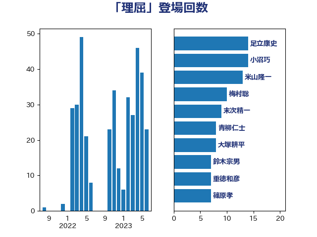

単語「理屈」

| 足立康史 | 日本維新の会 | 14 回 |
| 小沼巧 | 立憲民主党 | 14 回 |
| 米山隆一 | 立憲民主党 | 13 回 |
| 梅村聡 | 日本維新の会 | 10 回 |
| 末次精一 | 立憲民主党 | 9 回 |
| 青柳仁士 | 日本維新の会 | 8 回 |
| 大塚耕平 | 国民民主党 | 8 回 |
| 鈴木宗男 | 日本維新の会 | 7 回 |
| 重徳和彦 | 立憲民主党 | 7 回 |
| 篠原孝 | 立憲民主党 | 7 回 |
| 浅田均 | 日本維新の会 | 7 回 |
| 川合孝典 | 国民民主党 | 7 回 |
| 西田昌司 | 自由民主党 | 6 回 |
| 穀田恵二 | 日本共産党 | 6 回 |
| 松原仁 | 立憲民主党 | 6 回 |
| 吉川元 | 立憲民主党 | 6 回 |
| 緒方林太郎 | 無所属 | 5 回 |
| 浅野哲 | 国民民主党 | 5 回 |
| 岸田文雄 | 自由民主党 | 5 回 |
| 寺田学 | 立憲民主党 | 5 回 |
| 馬場伸幸 | 日本維新の会 | 4 回 |
| 階猛 | 立憲民主党 | 4 回 |
| 福田昭夫 | 立憲民主党 | 4 回 |
| 石橋通宏 | 立憲民主党 | 4 回 |
| 牧義夫 | 立憲民主党 | 4 回 |
| 櫻井周 | 立憲民主党 | 4 回 |
| 山田勝彦 | 立憲民主党 | 4 回 |
| 山岸一生 | 立憲民主党 | 4 回 |
| 宮本岳志 | 日本共産党 | 4 回 |
| 中川正春 | 立憲民主党 | 4 回 |
| 鈴木俊一 | 自由民主党 | 3 回 |
| 自見はなこ | 自由民主党 | 3 回 |
| 福島伸享 | 無所属 | 3 回 |
| 石田昌宏 | 自由民主党 | 3 回 |
| 渡辺周 | 立憲民主党 | 3 回 |
| 柴愼一 | 立憲民主党 | 3 回 |
| 末松義規 | 立憲民主党 | 3 回 |
| 後藤茂之 | 自由民主党 | 3 回 |
| 山添拓 | 日本共産党 | 3 回 |
| 宗清皇一 | 自由民主党 | 3 回 |
| 和田有一朗 | 日本維新の会 | 3 回 |
| 古川元久 | 国民民主党 | 3 回 |
| 佐々木さやか | 公明党 | 3 回 |
| 高橋千鶴子 | 日本共産党 | 2 回 |
| 須藤元気 | 無所属 | 2 回 |
| 鈴木義弘 | 国民民主党 | 2 回 |
| 鈴木庸介 | 立憲民主党 | 2 回 |
| 神谷裕 | 立憲民主党 | 2 回 |
| 石破茂 | 自由民主党 | 2 回 |
| 玄葉光一郎 | 立憲民主党 | 2 回 |
| 渡辺創 | 立憲民主党 | 2 回 |
| 浜口誠 | 国民民主党 | 2 回 |
| 森田俊和 | 立憲民主党 | 2 回 |
| 徳永久志 | 無所属 | 2 回 |
| 小野泰輔 | 日本維新の会 | 2 回 |
| 小川淳也 | 立憲民主党 | 2 回 |
| 宮本徹 | 日本共産党 | 2 回 |
| 大島敦 | 立憲民主党 | 2 回 |
| 大島九州男 | れいわ新選組 | 2 回 |
| 塩川鉄也 | 日本共産党 | 2 回 |
| 吉田とも代 | 日本維新の会 | 2 回 |
| 北神圭朗 | 無所属 | 2 回 |
| 伊藤俊輔 | 立憲民主党 | 2 回 |
| 伊東信久 | 日本維新の会 | 2 回 |
| 上田英俊 | 自由民主党 | 2 回 |
| 三木圭恵 | 日本維新の会 | 2 回 |
| 高村正大 | 自由民主党 | 1 回 |
| 馬場雄基 | 立憲民主党 | 1 回 |
| 音喜多駿 | 日本維新の会 | 1 回 |
| 野田佳彦 | 立憲民主党 | 1 回 |
| 野村哲郎 | 自由民主党 | 1 回 |
| 酒井庸行 | 自由民主党 | 1 回 |
| 遠藤敬 | 日本維新の会 | 1 回 |
| 辻元清美 | 立憲民主党 | 1 回 |
| 谷田川元 | 立憲民主党 | 1 回 |
| 西田実仁 | 公明党 | 1 回 |
| 西村智奈美 | 立憲民主党 | 1 回 |
| 西村康稔 | 自由民主党 | 1 回 |
| 芳賀道也 | 国民民主党 | 1 回 |
| 舟山康江 | 国民民主党 | 1 回 |
| 美延映夫 | 日本維新の会 | 1 回 |
| 緑川貴士 | 立憲民主党 | 1 回 |
| 篠原豪 | 立憲民主党 | 1 回 |
| 稲津久 | 公明党 | 1 回 |
| 礒崎哲史 | 国民民主党 | 1 回 |
| 石川昭政 | 自由民主党 | 1 回 |
| 石垣のりこ | 立憲民主党 | 1 回 |
| 牧野たかお | 自由民主党 | 1 回 |
| 片山大介 | 日本維新の会 | 1 回 |
| 源馬謙太郎 | 立憲民主党 | 1 回 |
| 浜地雅一 | 公明党 | 1 回 |
| 泉健太 | 立憲民主党 | 1 回 |
| 沢田良 | 日本維新の会 | 1 回 |
| 江田憲司 | 立憲民主党 | 1 回 |
| 水岡俊一 | 立憲民主党 | 1 回 |
| 横沢高徳 | 立憲民主党 | 1 回 |
| 森屋隆 | 立憲民主党 | 1 回 |
| 柚木道義 | 立憲民主党 | 1 回 |
| 松本尚 | 自由民主党 | 1 回 |
| 杉尾秀哉 | 立憲民主党 | 1 回 |
| 本庄知史 | 立憲民主党 | 1 回 |
| 末松信介 | 自由民主党 | 1 回 |
| 早稲田ゆき | 立憲民主党 | 1 回 |
| 斎藤アレックス | 国民民主党 | 1 回 |
| 掘井健智 | 日本維新の会 | 1 回 |
| 志位和夫 | 日本共産党 | 1 回 |
| 岸真紀子 | 立憲民主党 | 1 回 |
| 山田美樹 | 自由民主党 | 1 回 |
| 山下貴司 | 自由民主党 | 1 回 |
| 山下芳生 | 日本共産党 | 1 回 |
| 小林茂樹 | 自由民主党 | 1 回 |
| 小山展弘 | 立憲民主党 | 1 回 |
| 奥野総一郎 | 立憲民主党 | 1 回 |
| 大西健介 | 立憲民主党 | 1 回 |
| 大石あきこ | れいわ新選組 | 1 回 |
| 大串博志 | 立憲民主党 | 1 回 |
| 堂込麻紀子 | 無所属 | 1 回 |
| 土田慎 | 自由民主党 | 1 回 |
| 吉田統彦 | 立憲民主党 | 1 回 |
| 吉田宣弘 | 公明党 | 1 回 |
| 古川禎久 | 自由民主党 | 1 回 |
| 勝部賢志 | 立憲民主党 | 1 回 |
| 務台俊介 | 自由民主党 | 1 回 |
| 加田裕之 | 自由民主党 | 1 回 |
| 前川清成 | 日本維新の会 | 1 回 |
| 佐藤正久 | 自由民主党 | 1 回 |
| 伊波洋一 | 無所属 | 1 回 |
| 伊佐進一 | 公明党 | 1 回 |
| 仁比聡平 | 日本共産党 | 1 回 |
| 井上英孝 | 日本維新の会 | 1 回 |
| 井上哲士 | 日本共産党 | 1 回 |
| 中司宏 | 日本維新の会 | 1 回 |
| 上田清司 | 国民民主党 | 1 回 |
| 上田勇 | 公明党 | 1 回 |
| 一谷勇一郎 | 日本維新の会 | 1 回 |